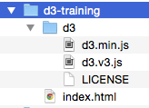
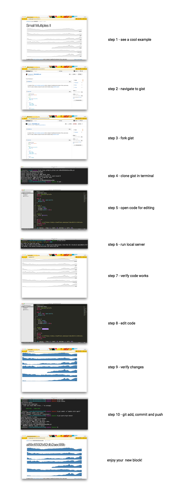

Getting Started
Introduction
Welcome!! In the interest of not reinventing the wheel, for this getting-up-and-running session, I will be leveraging the many existing d3 resources and tutorials that are already out in the wild.
- These include:
- Scott Murray's book Interactive Data Visualization for the Web, particularly chapters 3 and 4: Technology Fundamentals and Setup.
- Kevin Quealy & Amanda Cox's lecture notes explaining how to configure your laptop from their NYU Data Journalism class (Spring 2014)
- Mike Bostock's d3 tutorials at d3js.org
- Mike Freeman's d3 intro lecture from his Summer 2015 web dev course at the University of Washington
But first, I have a question for you:
What do you want to get out of these sessions?
Getting your machines set up
We're going to establish the process by which you can fork existing d3 examples that you find on the web and develop with them locally.
Everyone should download a text editor to their laptop, if they have one.
For Mac users, I strongly recommend Sublime Text 2. It eventually costs $70, but you can use it for free for a while. Other alternatives include TextWrangler (free) or BBEdit (not free).
PC Users might consider Notepad or Notepad++.
Let's create a project folder where we can save our work.
I recommend calling it d3-training.
Now download the d3 library, the latest version is here: https://github.com/mbostock/d3/releases
Unzip its contents and place them under your project folder.
Next let's create an HTML file called
index.htmland save it under our project folder.Open your text editor and paste the following template code in there:
<!DOCTYPE html> <html lang="en"> <head> <meta charset="utf-8"> <title>D3 Test</title> <script type="text/javascript" src="d3/d3.v3.js"></script> </head> <body> <div>Hello There</div> <script type="text/javascript"> // Your beautiful D3 code will go here </script> </body> </html>Your folder structure should now look something like this:

When developing locally, note that your browser may enforce strict permissions for reading files out of the local file system. The way around this is to use a local web server. There are many options here, but we're going to go with Python's built-in server.
If you have a Mac, Python should already be installed.
If you're on a PC, then you need to get Python from here. Once you've downloaded version 2.7, we'll need to add
C:\Python27\Scripts;to your PATH environment variable. More details on how to do that are here.Finally, via the command line, navigate into the directory that you want served. For example, if your project folder is in your Documents folder on your Mac, you could type:
cd ~/Documents/d3-trainingThen start your server by typing
python -m SimpleHTTPServer 8888 &into the command line.Okay, now let's open a modern browser and bring up
localhost:8888/d3-trainingto see if we can see our HTML pageThere are multiple ways to fork examples on bl.ocks.org. To save time, we are going to do it manually via Github's Gist editor. A more efficient workflow would be to get git, a free and open source distributed version control system, and follow Mike Bostock's instuctions here.
The steps for creating a bl.ock ...for now
Coming this fall, a new app will be released which will allow anyone to create, fork and edit d3.js code snippets for use with bl.ocks.org right in the browser, no terminal required. The app began as a Kickstarter project to support its development.
In the meantime, however, here are the steps (as described by Ian Johnson when making the case for his Kickstarter campaign):

Once you're up and running with forking examples and making your own stuff and are ready to publish to a github gist (i.e. step 10 in Ian's list below), you can follow the steps as outlined by Kevin Quealy and Amanda Cox here.